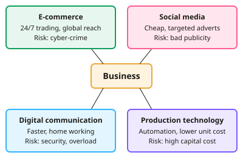

GCSE Business · Topic 3
Influences on business in detail
This topic looks in detail at the outside forces that shape business decisions.
We cover technology, the law, the economic climate, interest and exchange rates, and the competition a business faces.
For each one, the key skill is explaining whether it is an opportunity or a threat for a particular business.
- 5 subtopics
- 229 questions
- Free: 3.1 notes and 10 questions
In this topic
- 3.1Technology: e-commerce, social media, digital communication and technology in productionFree below · 57 questions
- 3.2Legislation: consumer, employment, health and safety, equality and competition lawOpen in Full Marks · 36 questions
- 3.3The economic climate: consumer income, unemployment, inflation, taxation and the economic cycleOpen in Full Marks · 40 questions
- 3.4Interest rates and exchange rates: effects on costs, demand, importers and exportersOpen in Full Marks · 59 questions
- 3.5The competitive environment: competitors, market structure, price and non-price competition, and responding to competitionOpen in Full Marks · 37 questions
3.1 · Free notes
Technology: e-commerce, social media, digital communication and technology in production

Key points
- E-commerce means buying and selling over the internet. It lets a firm trade 24/7, reach national and global markets and avoid the rent and rates of high-street premises.
- Risks of e-commerce include cyber-crime, data protection breaches (UK GDPR), delivery and returns costs, and customers being unable to see or touch the product.
- M-commerce is buying through a smartphone or app. Firms need a mobile-friendly website or app to keep up with customers' shopping habits.
- Social media (Instagram, TikTok, Facebook) allows low-cost, targeted advertising, viral marketing and two-way contact with customers. It can build brand loyalty.
- The risk of social media is negative publicity. Complaints and bad reviews spread fast, and staff time is needed to manage accounts, so reputation can be damaged quickly.
- Digital communication (email, video conferencing, instant messaging) speeds up decisions, cuts travel costs and supports home working. Drawbacks are information overload, less personal contact and security risks.
- Technology in production includes automation, robots and CAD/CAM. It raises productivity, makes quality consistent and lowers unit costs.
- Production technology has drawbacks: high capital cost, possible redundancies, staff retraining, and the risk of breakdowns that halt production.
- Technology affects the marketing mix. Promotion moves online, place includes online distribution, and price comparison websites make prices more transparent.
- Firms that fail to adopt new technology risk losing competitive advantage. Small firms may struggle with the cost, so the best choice depends on size, product and customers.
- Payback period = initial cost ÷ annual saving. It is used to judge whether investing in technology is worthwhile.
- For evaluation questions, weigh costs against benefits and link your answer to the scenario. For example, a shop with mostly older customers may gain little from social media.
In more detail
- Worked payback: a self-checkout system costs £24,000 and saves £8,000 a year in wages → payback period = 24,000 ÷ 8,000 = 3 years.
- E-commerce trade-off: an online shop avoids high street rent and can keep stock in a cheaper warehouse, but it must pay for delivery, returns and website security.
- Social media example: a small bakery can post videos on TikTok or Instagram for almost nothing, but one viral bad review can damage its reputation quickly.
- Data rules: firms that collect customer data must keep it secure and use it fairly under UK GDPR, or risk large fines from the Information Commissioner's Office (ICO).
Practice
Technology: e-commerce, social media, digital communication and technology in production: 10 questions
Pick an answer to check it, or open the answer for the explanation.
1. Which is a benefit of e-commerce for a small independent shop?
- Customers can inspect goods before buying
- Guaranteed higher profit margins than high-street rivals
- No need to comply with data protection law
- Able to sell to customers across the UK without extra shops
Show answer
D: Able to sell to customers across the UK without extra shops. An online shop can reach customers nationwide without opening more premises. Data protection law still applies, profit is not guaranteed, and customers cannot inspect goods online.
2. Which is a risk to a business from selling online?
- Being unable to reach customers abroad
- Being limited to opening 9am-5pm
- Needing a larger shop to display stock
- Cyber-attacks that steal customer data
Show answer
D: Cyber-attacks that steal customer data. Online firms hold customer and payment data, so hacking and data breaches are a major risk. Online trading is not limited to shop hours and can reach overseas customers.
3. A café wants cheap, targeted advertising to 18-25 year olds in its town. Which method is most suitable?
- Full-page national newspaper advert
- Sponsoring a national sports event
- Paid social media adverts
- National television advert
Show answer
C: Paid social media adverts. Paid social media adverts can be targeted by age and location at low cost. The other methods are expensive and reach a national audience, so they are wasteful for a local café.
4. A bakery's customer posts a complaint that is shared hundreds of times. Which risk of social media does this show?
- Stricter health and safety law
- A stronger exchange rate
- Negative publicity spreading quickly
- Higher production costs
Show answer
C: Negative publicity spreading quickly. Social media lets complaints spread quickly and widely, which can damage a firm's reputation. This is a key risk alongside the benefits of cheap promotion.
5. A firm replaces 4 workers paid £24,000 each a year with a robot costing £150,000. The robot costs £10,000 a year to run. What is the payback period?
- 0.6 years
- 6.3 years
- 15.0 years
- 1.7 years
Show answer
D: 1.7 years. Annual saving = 4 × £24,000 − £10,000 = £86,000. Payback = £150,000 ÷ £86,000 = about 1.7 years.
6. Which is a likely drawback of introducing robots on a production line?
- Higher labour cost per unit
- Less consistent quality
- Slower production speed
- High initial capital cost
Show answer
D: High initial capital cost. Automation needs expensive equipment and installation. Its benefits are normally faster output, consistent quality and lower labour cost per unit.
7. What is a main benefit of video conferencing for a business with sites in several cities?
- Removes the need for any written records
- Reduces travel costs and saves time
- Makes face-to-face contact unnecessary
- Guarantees staff are more motivated
Show answer
B: Reduces travel costs and saves time. Meetings can be held without travelling, saving money and time. It does not guarantee motivation, and some face-to-face contact is still useful.
8. Which is an example of m-commerce?
- Buying shares at a stockbroker's office
- Ordering by phone from a printed catalogue
- Buying from a shop's website on a desktop PC
- Buying a train ticket through a smartphone app
Show answer
D: Buying a train ticket through a smartphone app. M-commerce is buying and selling using mobile devices such as smartphone apps. A desktop website purchase is e-commerce, but not specifically mobile.
9. Which statement about automation is correct?
- It can lower unit costs but needs high investment
- It always reduces total costs in the first year
- It reduces the need for quality control to zero
- It removes the need for any staff training
Show answer
A: It can lower unit costs but needs high investment. Automation usually cuts unit costs over time, but the large initial investment means costs may not fall in year one. Staff still need training and checks.
10. A shop mostly serves customers over 70 who rarely use the internet. What most limits the benefit of social media advertising?
- Social media adverts cost more than TV
- Advertising online is always illegal
- Its customers are unlikely to see the adverts
- Social media cannot be targeted
Show answer
C: Its customers are unlikely to see the adverts. Social media is only effective if the target customers use it. Here the customers are mainly offline, so other promotion such as local press or leaflets would work better.
Keep going in Full Marks
Full Marks has 57 questions on Technology: e-commerce, social media, digital communication and technology in production (47 more than here), set out in practice levels. You also get notes and 3D models for all 5 subtopics of Influences on business in detail, plus games, timed exams and past papers.